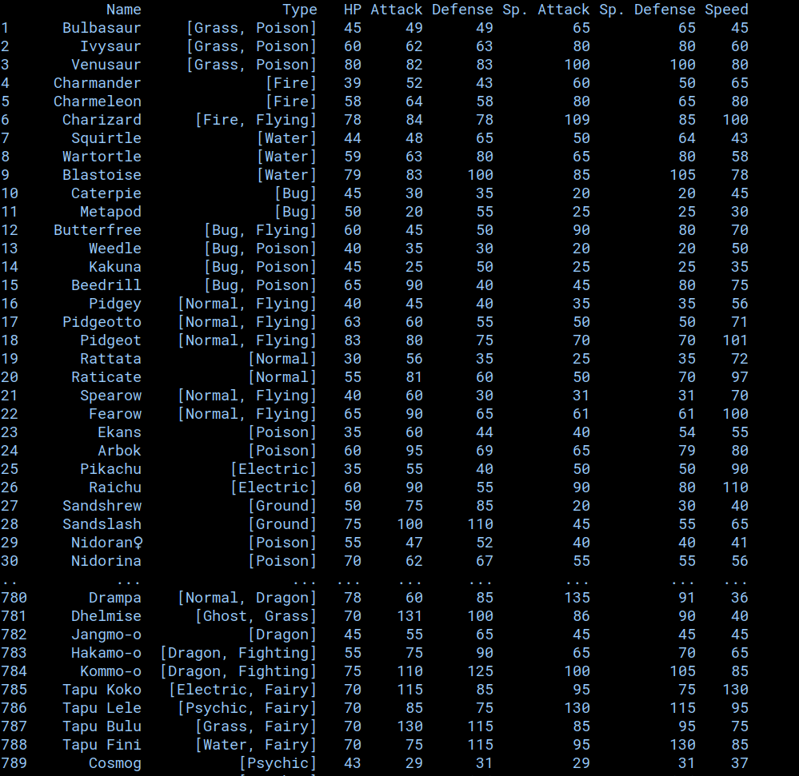
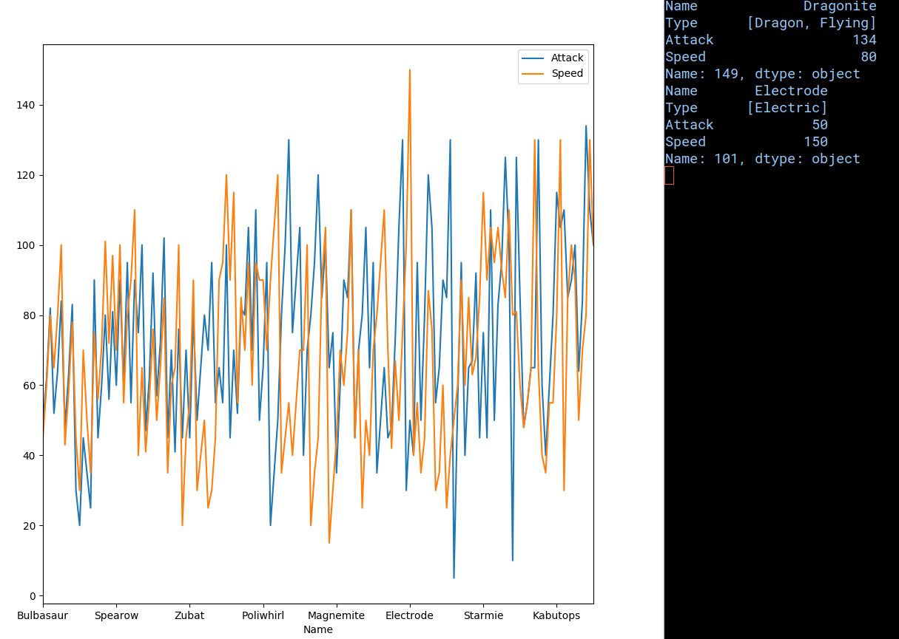

Pandas is a library written by Wes McKinney. The library can be used to analyze data that is either created or imported. Data structures specific to pandas include Series and DataFrames. They can be used to organize data, and using methods from the library matplotlib, model the data with different kinds of graphs.
pip install matplotlib
pip install pandas
import pandas as pd
import numpy as np
Series are 1-dimensional arrays. They can hold data of any type. Elements are indexed from 0.
s = pd.Series(np.random.randn(10)) #Generates a series of 10 random numbers
Dataframes are 2-dimensional arrays. Can hold columns of mixed types. Can be thought of as a dictionary of series.
df = pd.read_csv('data.csv') #Can read from files like csv and json
Dataframe has useful features:
df.dtypes shows the data type of each column
df.describe() Describes basic stats of the dataframe such as the mean, standard deviation, minimum,
first quartile, second quartile, third quartile, and maximum of each column of the dataframe.
df.sort_values('col_name', ascending=False) Sorts dataframe by col_name in descending order
df.loc[col0][col1] get all elements in col0 and col1
df.loc[2:3, [col0, col1]] get all elements in col0 and col1 within specified row numbers
df['col_new'] = df.col0 / 2 Creates a new column. This example's new column is a copy of col0 with values halved.
Python Pandas is often used to analyze data in order to solve problems or find patterns within a data set. One problem that our team here at PaPaPandas faces is that
our good friend Pangoro had their favorite spoon stolen by a mysterious Alakazam.
Although Pangoro could easily Sucker Punch the Alakazam, it was able to survive with 1 hit point because it was carrying a
Focus Sash. It was then able to faint our good friend Pangoro and steal it's spoon. We at PaPaPandas wanted to find out why by using the
data our handy pokedex.json provides us.
Instead of reading in csv or json files normally through Python's default file parser, Pandas has it's own methods of reading in such data as dataframes (or series if the file is only 1 column).
For example, a .json file can be read by pandas as pandas.read_json("path/to/file.json"). Following the presentation in the /present directory of our repository,
we can see the pokedex.json file be read as the following dataframe and stored as the variable pokedex
Looks messy right? Well, the dataframe can be used to create a more organized version of the same data.
dataframe.iterrows() iterates over the dataframe as (index, Series) pairs similarly to a Python dictionary with (key, value) pairs.
For the purpose of our demonstration, we wanted to organize the data into columns of each Pokemon's type and base stats. We could do so
through the following code snippet.
for (row, series) in pokedex.iterrows():
# access the english name in name Series of the original pokedex DataFrame
name = series['name']['english']
# access the dictionary of base stats in the base Series of the original pokedex DataFrame
stats = series['base']
# set each row to corresponding data in each column for the new DataFrame
type = series['type']
english_dex.loc[row + 1] = [name, type, int(stats['HP']), int(stats['Attack']), int(stats['Defense']), int(stats['Sp. Attack']), int(stats['Sp. Defense']), int(stats['Speed'])]
This iteration of the dataframe would look like this when printed:
We can further isolate the pokedex entires of both Pangoro and Alakazam by searching for the rows containing their name.
# pangoro's entry
pangoro = english_dex[english_dex.Name == 'Pangoro']
pangoro.plot.bar(x='Name')
print(pangoro)
# alakazam's entry
alakazam = english_dex[english_dex.Name == 'Alakazam']
alakazam.plot.bar(x='Name')
print(alakazam)
plot.show() # after all dataframes have been plotted, they can be shown through this invocation of plot.show()
Python Pandas also provides its users the ability to plot dataframes onto different kinds of graphs. They may range from bar graphs, line graphs, pie charts, etc.
Documentation for plotting.
Below are the bar graphs for the base stats of both
Pangoro and Alakazam.
After analyzing these charts, we can see that Alakazam is both smarter and faster than Pangoro, as indicated by Alakazam's superior Sp.Attack and Speed stats. Alakazam may have schemed to steal Pangoro from the get-go, and used the Focus Sash as a defense mechanism in case Pangoro would try to attack it. (Incoming Pokemon facts) Pangoro has superior typing and would be immune to Alakazam's Psychic abilities as well as having an advantage offensively. Thus, PaPaPandas can conclude that Alakazam was able to learn a Fairy type attack to faint Pangoro and steal the spoon.
As said before, Pandas can be used to analyze patterns within a data set. Let's take the Kanto Pokedex for instance, which contains the first 151 Pokemon ever created.
We can isolate the Kanto Pokedex from the Pokedex we created from our pokedex.json knowing this fact. The code snippet below isolates the first 151 Pokemon
and displays each Pokemon's name, type, Attack, and Speed stats.
# Kanto dex
kanto = english_dex.loc[0:151]
#print(kanto)
attack_kanto = pd.DataFrame(columns=['Name', 'Type', 'Attack', 'Speed'])
for (row, series) in kanto.iterrows():
name = series['Name']
type = series['Type']
attack = int(series['Attack'])
speed = int(series['Speed'])
attack_kanto.loc[row] = [name, type, attack, speed]
We can proceed to use this dataframe containing the Attack and Speed stats of Pokemon from Kanto to create a line chart to learn about any patterns.
# plots the data frame containing Pokemon from Kanto and their Attack and Speed stats
attack_kanto.plot.line(x='Name')
# get the row with the highest attack
print(attack_kanto.loc[attack_kanto['Attack'].astype(int).idxmax()])
# get the row with the highest speed
print(attack_kanto.loc[attack_kanto['Speed'].astype(int).idxmax()])
plt.show()
After plotting, we get the following line chart:
PaPaPandas analysis of this information is that as Pokemon evolve, they get both stronger and faster. However, the baby Pokemon (such as Bulbasaur) tend to have the lower stats and thus are weaker. We can also see that certain species can definitely be the strongest in terms of a specific stat. Dragonite has the highest Attack stat and surprisingly, Electrode has the highest Speed stat.
Python Pandas provides it's users an easy way to organize and visualize data through it's dataframe structures and the methods accompanying it. It removes the hassle of parsing and organizing large data sets as well as providing statistical analysis. If a project can be enhanced with the addition of Pandas' ability to plot data quickly and showcasing these charts to users, PaPaPandas urges you to learn Pandas for this very purpose.